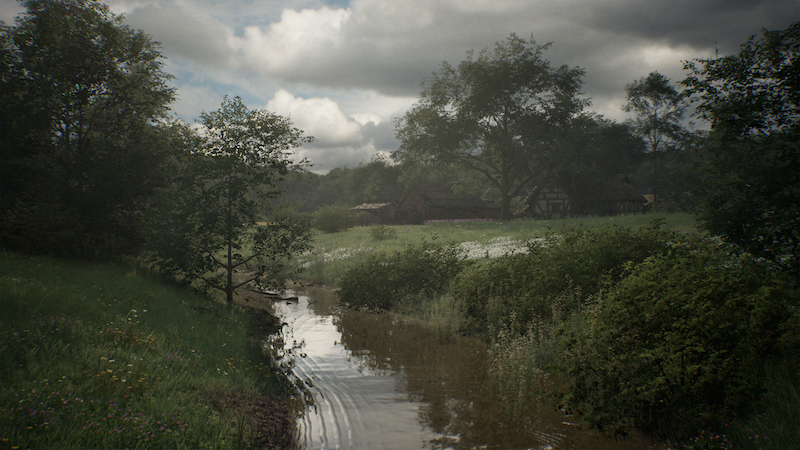
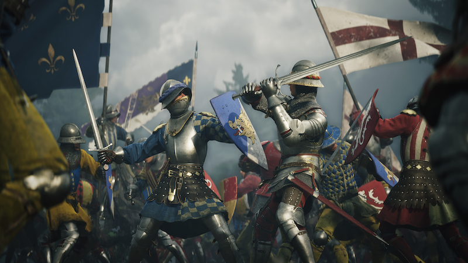
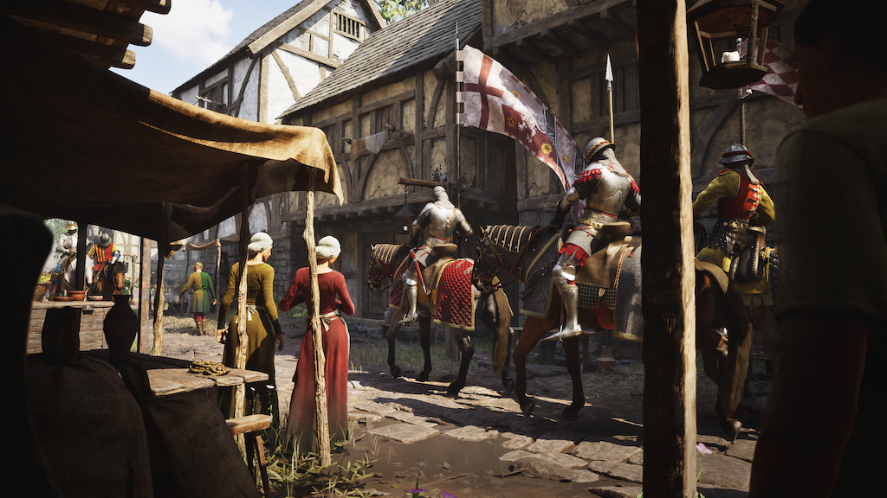
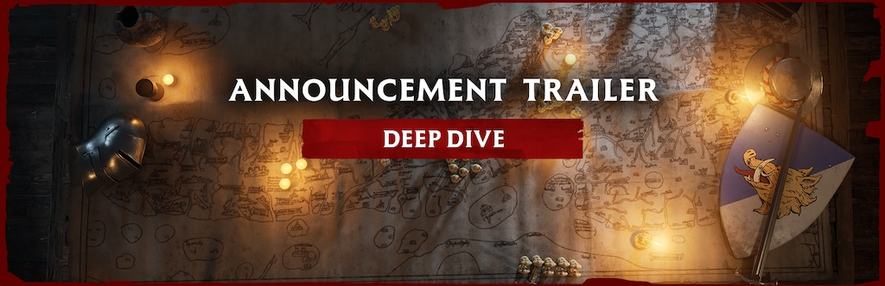
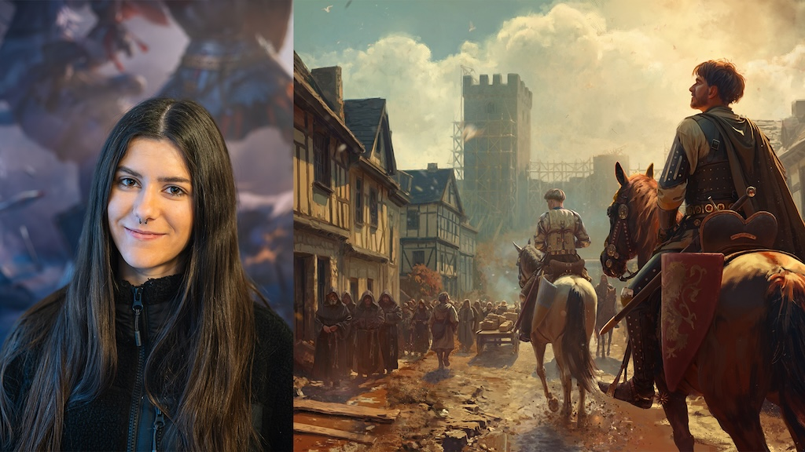
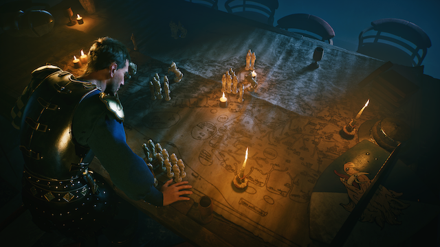

LATEST NEWS
Stay updated with the latest Chronicles: Medieval news, announcements, gameplay reveals, developer diaries, battle-system updates, and 2026 release-window information.
Featured News

Chronicles: Medieval 2026 Gameplay Watch
Chronicles: Medieval is currently listed for 2026 on Steam. Recent official updates highlight the gameplay reveal, battle planning, standing orders, formations, morale, command mode, culture-shaped armies, and the Holy Roman Empire showcase.
New Guide Hub: Roles, Map Reading, and Similar Games Comparison
2026-06-29

The guides section now includes campaign role ideas, terrain-reading tips, army-command planning, and a comparison section for players coming from Mount & Blade, Crusader Kings, and Total War. The goal is to help readers understand Chronicles: Medieval as a Hundred Years' War sandbox built around reputation, battle decisions, morale, and the story created by each fight.
Steam Update Scan: Gameplay Reveal and Dev Diary #3 Battle Deep Dive
2026-06-28

The latest official Steam updates moved Chronicles: Medieval beyond broad release-window messaging. The June gameplay reveal showed the first proper look at battles, infantry clashes, larger-scale combat, the Holy Roman Empire, and Lars Mikkelsen as Johannes Gutenberg. Dev Diary #3 then detailed battle planning, standing orders, formations, morale states, commander-led combat, command mode, retreats, and the team's goal of battles that can scale from small skirmishes to major clashes.
STEAM PAGEDev Diary #2: Lordship, Loyalty, and War Systems
2026-05-22

Before the battle deep dive, the team outlined the political foundation behind conflict: lordship, loyalty, vassal relationships, rivalries, and the reasons wars begin. This is important for guide coverage because battles are not isolated skirmishes; they emerge from the sandbox's political map and character relationships.
STEAM PAGEBattle Guide Update: Standing Orders, Morale, and Retreats
2026-06-28
The newest guide focus is not just unit lists. Players should learn how standing orders shape unit behavior, why morale breaks armies before casualties do, and when an ordered retreat preserves strength better than allowing a rout.
OPEN GUIDESChronicles: Medieval 2026 Release Window and Gameplay Watch
2025-12-15

Chronicles: Medieval is listed for 2026 on Steam. Until an exact date is confirmed, this site tracks the stronger search topics: gameplay reveal footage, battle deep dives, formations, morale, commander control, culture-based armies, and medieval sandbox politics.
Wishlist and Follow Chronicles: Medieval for Release Updates
2025-12-10
Chronicles: Medieval is currently listed with a 2026 release window. Until an exact date, preorder package, or additional storefronts are officially confirmed, the safest action for interested players is to wishlist and follow the Steam page for new diaries, gameplay footage, release timing, and testing announcements.
Combat System Deep Dive - Chronicles: Medieval
2025-12-05

Get an in-depth look at the confirmed battle topics now driving Chronicles: Medieval coverage. Current official updates are strongest around battle planning, standing orders, formations, morale states, commander-led combat, command mode, retreats, and culture-shaped army behavior. Future guide updates should cite official footage or developer posts before adding detailed unit statistics, weather rules, or mode-specific claims.
Campaign Sandbox Guide - Chronicles: Medieval
2025-11-28
Current guide content should focus on the confirmed medieval sandbox: Hundred Years' War context, army command, campaign decisions, culture-shaped forces, and the choices that make your chronicle unique. Avoid claiming city-building, resource trees, or economy systems unless official developer updates confirm them.
Official Update Watch - Chronicles: Medieval
2025-11-20

There is no need to invent events while the game is still in a 2026 release window. Track Steam announcements, developer diaries, gameplay reveals, test announcements, and official media. When a real community event appears, summarize the official source and link it clearly.
Army Command Guide Planning - Chronicles: Medieval
2025-11-15
Future army guides should be based on official unit names, culture-specific forces, battle footage, and developer diary details. Good guide buckets include standing orders, initial orders, morale, command mode, retreats, terrain, and how army composition changes across cultures.
Testing and Release Information Watch - Chronicles: Medieval
2025-11-10

If Raw Power Games announces testing, demo access, or Early Access details, this page should link to the official post and explain eligibility, timing, and what content is included. Until then, keep release information tied to the Steam 2026 window.
Battlefield Systems Showcase - Chronicles: Medieval
2025-11-05
Battlefield coverage should be based on official gameplay footage and developer diary systems. Prioritize terrain, morale, formations, command mode, retreat decisions, and how initial orders shape the opening moments of a battle.
Developer Stream - Chronicles: Medieval Gameplay Reveal
2025-10-30

Official gameplay streams and trailers are the safest source for embedded video updates. Add new YouTube embeds only after confirming the channel, title, and video ID. Summaries should describe exactly what is shown: campaign decisions, battle setup, command mode, morale, retreats, or historical characters.
Chronicles: Medieval Platform and Store Watch
2025-10-25
Current Steam metadata lists Windows support and a 2026 release window. Do not claim console versions, cross-platform play, preorders, or platform-specific bonuses unless Raw Power Games or Steam confirms them.